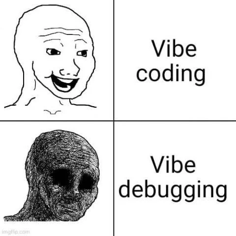
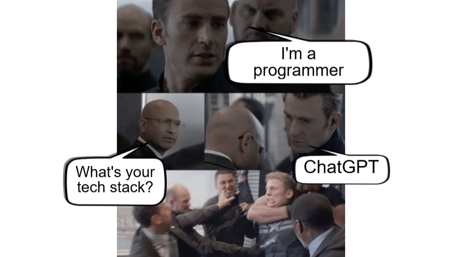
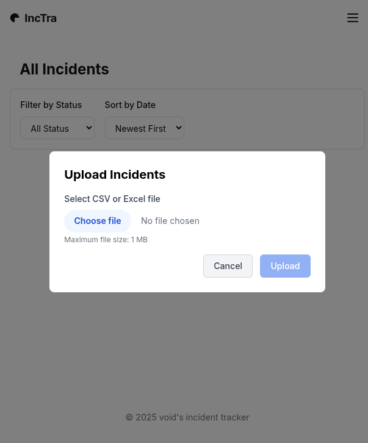
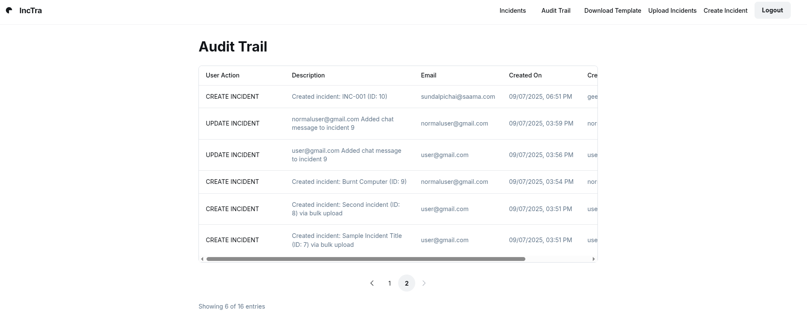
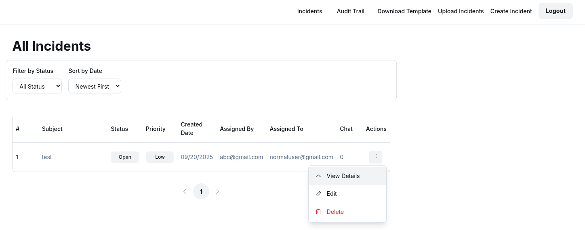
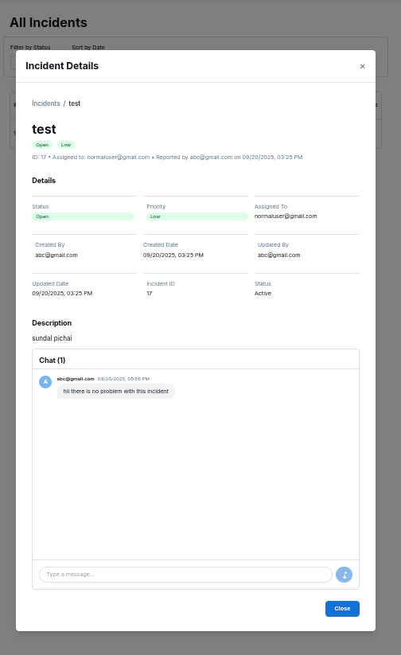

thisisvoid.in
thisisvoid.in
I tried vibe coding

- If you are not a programmer some part of this article might not appeal to you but my target audience for this article is programmers. I am this traditional programmer. I’ve learnt coding before LLMs became mainstream so I would call myself as a traditional programmer. Yet I am very well aware of this vibe coding/assisted coding ecosystem. I still remember the first time I tried using github copilot to write golang snippet around july 2022 everything felt magical. Eventhough the code it generated back then was a bit sloppy I was awestruck with this new technology. Since I wasn’t very happy with the golang code it produced, I moved forward to build things in my usual ways.
- Then came the arc of vibe coding. I could see vibe coded softwares being built left, right and centre. At the same pace they get hacked or have critical security vulnerability, looks very similar. came to a conclusion that landing pages looked flawless whereas so called MVP of products isnt really MVPing xd. I clearly understood that there has to be a middle ground where you dont have to do the mundane repetative non thinking coding tasks as well as not blindly ask the tool to build one.
- Thats how fellas semi-vibecoding felt more appealing to me.
- I wanna define semi-vibecoding this way. You have complete control over the code it generates, very precise, all it does is spit the exact code you asked and not do the thinking for you.
- I had this work trail assignment as part of my job application where I was asked to build a full stack application with more than 20+ features which includes core features,auth, rate limits,feature flags, role based access control,audit trails,multiple paginations, in app chat etc etc within 36 hours.
- I told them my expertise is in backend but I knew html,css,js and I usually build my indie product’s frontend with just these. I was particularly encouraged to vibe code to build so I used this as an opportunity to finally explore the hyped vibe coding.
- The tech stacks I was given are react, python (fastApi/flask),postgres. I knew python already (at this point everyone in this world know python), no idea what react is, no idea what fastApi/flask is. Since I am a backend engineer I obviously knew postgres.
- I Did a quick google search and I learnt about lovable,bolt,vo which builds app with english prompt. I didnt use them because come on man in the end its an engineering task despite I am asked to vibe code. I picked one of the agent/code completer like cursor,roo code,cline,kilo code. I am specifically avoiding mentioning the agent name or the LLM which I have used because honestly at this point it doesnt matter. What i noticed is in the end everything works the same. The tiny little benchmark difference between 98.7% and the other model’s 98.9% doesnt matter. if a vendor brings in a new feature in couple of days all of them replicate it. I find it more useful to build rather than fight online as a specific tool’s fanboy. anyways the stickiness to tools are so low that we use multiple vendors to build a single application. So there is no point in arguing.
- My first vibe coding session was eye opening. It hit me really hard that how much things are hyped up in twitter SF AI bubble. I wanted a starting point to know its capabilities. Do I kept giving prompts and didnt look at the code expecting to see the final result. Even after tons of iterations with prompts nothing worked properly. kept giving it high level detailed feature prompts to see if it can build version 0. Nahhhh in the end lot of credits wasted. lesson-1: there are more vibecoding tutorials than vibecoded production websites. think about it
- Now I had a borderline understand of its capabilities I quickly went through react and fastAPI docs to understand why it exists,what are the features available,whats the right practices. I wanted to create a graph on my head to cross verify the frontend it generated. Then I went through a couple of opensource react and fast API projects to understand how files are structured in production ready applications.
- Phase 2: fixing my earlier mistakes. everything is same like how I used to code before. I had the requirement list, did the system design diagram, understood and noted down the tradeoffs why I chose one method over other(all I had is 36 hours). we all know that setting up a project is painful. we always wanna directly jump into building things. Thats the reason why we have all our predefined boilerplate templates customized and built for our use cases. I usually prefer golang for backend and use html templating,htmx for frontend, some embedded db like sqlite. “assisted coding exists for a reason. They help in solving developer pain points right? right?????” noooooooooooo. again got caught in this trap. My pain point is to generate the initial boiler plate so asked the ai gods to do that and it screwed up again. despite clearly giving instruction about production grade it did some random thingy. It was able to spit good standalone react boilerplate, fastApi boiler plate, postgres boilerplate,But when asked about combining them all it just messed up. Thats because structuring the code in certain way will decide how the code architecture will flow. This task might sound so trivial but we need deeper thinking because this just determines how maintainable and scalable the code gets. Then I went ahead and set everything up from what I reasoned out after observing from the OSS projects. Lesson 2: early seeds of your code must be sown by you
- At this point I am 20% into building this, I have ideated it on my own, designed and now I have set up the base project as well all of it without ai. glad I did this rather letting ai god steer the wheel because I am bit more confident that no matter how much ai pollutes my code henceforth the damage will be less since the base is strong and I dont have to worry rewriting entirely from scratch.
- I have about 20 features to be implemented. so I prompted feature 1 and again another mess. This mistake is due to my bad understanding. I thought since I am asking it to implement just one single feature, as I am narrowing it down, ai gods will implement it accurately. But again one single feature involves both frontend, backend,db migrations,db setups and a bunch of miscellaneous things for that feature to work. plus I didnt know by default the agent tool which I was using allows everything to write so I had no control over what it was being generated. it took me half an hour to go find and change the toggle. But the pile of mess was already created and luckily I had committed everything at a certain checkpoint. Here in my case I have committed the code once my boilerplate was ready. so It was easy for me to revert the changes. Lesson 3: You have to commit the code more frequently than usual while using AI tools to prevent disasters
- Now I have made enough mistakes to understand how to utilize the tool I have with me. First I narrowed it down as much as possible. Made sure that no single line is written by ai gods without me reading and reviewing it. This worked wonders. We have seen so many articles on how ai messes up code quality and injects silent bugs. Just by doing this I escaped from all possible bugs. I found a right balance between asking the ai gods to write the code and writing by myself. I made sure that backend systems which involed lot of logic were hand written. As well as My prompt rather being generic to implement the feature became way more specific including the exact way I wanted it to implement.
- for example instead of asking it to randomly implement RBAC Rather I would let it know what exactly I want:
we need to implement a new feature called RBAC.
create a new folder called rbac/ where we will have a file called master_permision.py. which will contain enums like const ( PermCreateIncident = 1 PermViewIncident = 2 PermDeleteIncident = 3 PermUpdateIncident = 4 PermViewAllIncident=5, Audittrail.... PermAll= 0 ) and a map which maps role name with permisions like admin= All,user={PermcrreateIncindent,view,Update} with this will create byte array and store it in db role_colume upon which we will do a bitwise AND operation to check if the user has the paticular permission. for example user A has permission 0001100 and if we check for permission 00001000. doing an AND gate will give us 1 at that bit which means we have the required permission. DO not implement the bitwise check now or adding it to the db just create the file and once I verify it we will proceed forward.
- after prompting I will check every single line that it generates and if I find it thinks on its own and not just align with my thoughts, I straightaway stop it and explain whats wrong and whats expected. Finally A success lesson here. Lesson 4: Assisted coding is our servant not our master.
- This also gave me an advantage. I don’t want any crazy high quality LLM model because all I want is a servant who just translates my english to code and fortunately every single LLM does this really well.
- once my codebase took certain shape (about 80% completion) I could really feel the tool’s power. for smaller bug fixes I stopped telling the tool where all to change rather I would just let the tool know what to do and ai gods were smart enough to go fix them. the larger the code base became the lesser was my hand holding. Still I would exactly let the ai gods know what to do but still I now had the liberty to be bit more linent.
- I extensively used them to document everything. worked really well
- Glad I used react. For some reason I dont know exactly why maybe the amount of react code used to train might be crazy high, The react code’s quality was really high with whatever LLM model I chose. I hand drew the UX and workflows, later pinged a couple of figma boys to help me out. Since It was weekend unfortunately I had to design UI on my own. Luckily I found google’s stitch . rompted it to build decently looking figma screens which I would have never built if this tool doesn’t exist.
- built the screen using the figma and with the help of ai gods I was able to transilate the figma into responsive frontend. I manually made sure the data coming in and out are secure, validated,sanitized at both frontend and backend. I was shocked how very obvious web vulnarabilites are ignored by these tools. **Lesson 5: Security is everything. It should always be your top priority. Customers data security should as secure as your social security number or Adhaar card. Nail it down. Nothing is more important than a secure website. **
- finally deployment is one of my forte. so I cruised it and deployed the application sent them a working link withing 36 hours.
My takeaways:

Pure vibecoding is a scam. Its not worth the effort to vibecode and build a mvp which you have no control of. The last thing you want is your app crashing in demos and you have no idea on how to fix it. A Figma workflow is far better because it is a part of the engineering sprint and the frontend guy would use it to build the application as well as you can show demo. win win situation. You can avoid expectation mismatch. Its so stupid to work on parallel tracks because the code these vibecoding tools generate for your MVP are anyways arent very useful for engineers.
Semi vibe coding is very appealing. Helps me to explore a lot of unknown territory with more confidence. One big advantage is as a backend engineer I can confidently work on frontend, understand the code and over a point I was able to write few parts of frontend code by myself as well. By the end of this project I knew every single word that was generated. I think thats the key here. asking the ai god to generate and you going on a coffee break is more of a marketing gimmics. there is a high possibility of a vibecoded working code which can deviate from your chain of thoughts.
Did it save me a lot of time? backend no. but frontend yes. A major time consuming portion of writing frontend is copy pasting already built components or code snippets for uniformity and it saved a lot of time. But in case of deep technical work I would rather code it straightaway than explaining my intuition to the tool.
It was a good experience for me to understand this world. As someone who deeply enjoys building and coding I would definitely use it for my day job if asked, purely for the speed but Personally I still prefer ai as a enhanced stackoverflow when I’m stuck and not anything more for my personal projects because I enjoy the process of coding as equally as seeing people enjoy using my products. I clearly see a distinction between engineers and product builders. at times they overlap with each other but both are not same. I am very positive that will keep improving my engineering craft with all these beautiful tools.
I hope you liked this article. As usual my DMs are always open to debate about the ideas written here. cheers!
some screen grabs from this simple website:
( DO not make fun of my ui skills xd)

  